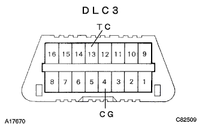

EBD ABS System Diag Code Inspection / Erase |
Diagnostic code read by SST (TASCAN)
Connect the SST to DLC3 in the IG switch off.
Turn on the IG switch and follow the Tascan display screen to read the diagnostic cord.
Diagnothesis code read by Warnin Gramp
|  |
In the IG switch off, use the SST to shortly use the DLC3 13 (TC) ← → 4 (CG) terminal.
Turn on the IG switch and read the number of flashes of the ABS Warnin Gramp.
Open between 13 (TC) ← → 4 (CG) of DLC3.
Diagnothescode erasing method (TASCAN)
Connect the SST to DLC3 with IG switch off.
Turn on the IG switch and delete the diagnostic code according to the Tascan display screen.
Diagnothescode erasing method (DLC3 short circuit)
In the state of the IG switch OFF, use the SST to shorten the DLC3 13 (TC) ← → 4 (CG) terminal.
Turn on the IG switch and step on the brake pedal more than 8 times in 5 seconds.
Confirm that the normal code is output.